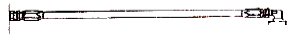

건설기계정비기능사 (2012-02-12 기출문제)
1과목: 건설기계정비(임의구분)
1. 건설기계의 축전지 충전상태를 측정할 수 있는 것은?
- 압력계
- 저항시험기
- 비중계
- 그로울러 테스터
(정답률: 74%)

2. 실린더 내경보다 행정이 큰 기관은 무슨 기관인가?
- 장 행정기관
- 정방 행정기관
- 단 행정기관
- 가변 행정기관
(정답률: 86%)
3. 전자제어식 디젤분사장치의 고압 영역은 압력형성, 압력저장 및 연료계량의 영역으로 구분한다. 압력 형성을 하는 것은?
- 고압펌프
- 레일압력 센서
- 커먼 레일
- 스피드 센서
(정답률: 77%)
4. 디젤기관의 출력부족 원인과 가장 관계가 먼 것은?
- 연료의 세탄가가 낮다.
- 연료의 필터가 막혀 있다.
- 윤활유의 점도지수(粘度指數)가 낮다.
- 압축압력이 낮다.
(정답률: 77%)
5. 어떤 건설기계로 440m의 언덕길을 왕복하는데 0.330ℓ 의 연료가 소비되었다. 내려올 때 연료소비율이 8km/ℓ 이었다면 올라갈 때의 연료소비율은?
- 0.8km/ℓ
- 1.6km/ℓ
- 2.5km/ℓ
- 3.2km/ℓ
(정답률: 62%)
6. 디젤기관에서 분사노즐이 과열되는 원인 중 틀린것은?
- 분사시기의 틀림
- 분사량의 과다
- 과부하에서의 연속운전
- 노즐 냉각기의 불량
(정답률: 44%)
7. 축전지의 용량 단위는?
- Ah
- A
- W
- VA
(정답률: 80%)
8. 기관에 사용되는 냉각장치 중 라디에이터의 구비조건으로 틀린 것은?
- 단위 면적당 발열량이 적어야 한다.
- 공기저항이 적어야 한다.
- 냉각수의 흐름저항이 적어야 한다.
- 가능한 한 가벼운 것이 좋다.
(정답률: 73%)
9. 에어컨장치의 증발기에 설치되어 증발기 출구 측의 온도를 감지하여 증발기의 빙결을 예방할 목적으로 설치한 것은?
- 핀 서모센서
- AQS(Air Quality System)
- 일사량센서
- 외기온도센서
(정답률: 68%)
10. 교류(AC) 발전기 분해 시 필요 없는 기구 및 공구는?
- 바이스
- 오픈엔드 렌치
- 토크 렌치
- 소켓 렌치
(정답률: 71%)
11. 신품 방열기 용량이 40L이고 사용 중인 방열기 용량이 32L일 때, 코어의 막힘율은?
- 10%
- 20%
- 30%
- 40%
(정답률: 77%)
12. 과급기에 대한 설명 중 틀린 것은?
- 흡입효율을 높여 출력향상을 도모한다.
- 터보차저는 엔진 압축가스로 구동된다.
- 구조상 체적형과 유동형으로 나누어진다.
- 공기를 압축하여 실린더에 공급한다.
(정답률: 65%)
13. 디젤기관의 연료 분사계통에 널리 쓰이는 펌프는?
- 터빈 펌프
- 기어 펌프
- 다이어프램 펌프
- 플런저 펌프
(정답률: 73%)
14. 밸브스프링의 직각도는 그 자유고의 몇 % 이상 기울기가 있으면 교환하는가?
- 15%
- 7%
- 5%
- 3%
(정답률: 50%)
15. 기관의 피스톤 간극이 클 경우 생기는 현상으로 틀린 것은?
- 압축압력 상승
- 블로바이 가스 발생
- 피스톤 슬랩 발생
- 엔진 출력 저하
(정답률: 77%)
16. 엔진에서 밸브 간극이 작으면 어떤 현상이 생기는 가?
- 실화가 일어난다.
- 엔진이 과열된다.
- 밸브의 열림 기간은 짧고 닫힘 기간은 길다.
- 밸브 시트의 마모가 급격하다.
(정답률: 48%)
17. 건설기계에 사용되는 유압계, 연료계 등은 대부분 어느 방식을 이용하는가?
- 공기식
- 기계식
- 유체식
- 전기식
(정답률: 55%)
18. 기동 전동기의 전기자를 시험하는 데 사용되는 시험기는?
- 전압계
- 전류계
- 저항 시험기
- 그로울러 시험기
(정답률: 64%)
19. 디젤기관의 분사노즐 시험에 가장 알맞은 연료 온도는?
- 60℃
- 40℃
- 20℃
- 10℃
(정답률: 47%)
20. 구동 벨트에 대한 점검사항 중 틀린 것은?
- 구동 벨트 장력은 약 10kgf의 엄지손가락 힘으로 눌렀을 때 헐거움이 약 12~20mm 이어야 한다.
- 장력이 너무 세면 베어링이 조기 마모된다.
- 장력이 너무 약하면 물 펌프의 회전속도가 느려 엔진이 과열된다.
- 벨트는 풀리의 홈바닥 면에 닿게 설치한다.
(정답률: 72%)
2과목: 일반기계공학(임의구분)
21. 지게차의 작업용도에 의한 분류가 아닌 것은?
- 프리 리프트 마스트형
- 로테이팅 클램프 형
- 하이 마스트형
- 크롤러 마스트 형
(정답률: 59%)
22. 콘크리트 피니셔에서 콘크리트의 이동순서를 바르게 표기한 것은?
- 호퍼 - 스프레더 - 1차 스크리드 - 진동기 - 피니싱 스크리드
- 1차 스크리드 - 스프레더 - 진동기 - 호퍼 - 피니싱 스크리드
- 호퍼 - 1차 스크리드 - 스프레더 - 진동기 - 피니싱 스크리드
- 스프레더 - 호퍼 - 진동기 - 1차 스크리드 - 피니싱 스크리드
(정답률: 63%)
23. 머캐덤 롤러의 축과 바퀴의 배열로 맞는 것은?
- 2축 2륜
- 2축 3륜
- 2축 4륜
- 3축 3륜
(정답률: 70%)
24. 기관이 중속상태에서 2000rpm으로 회전하고 있을 때, 회전토크가 7m-kgf라면 회전마력은?
- 약 9.8PS
- 약 19.5PS
- 약 25.5PS
- 약 39.5PS
(정답률: 53%)
25. 모터 그레이더가 수행 할 수 있는 작업이 아닌 것은?
- 지균작업
- 적재작업
- 경사면작업
- 제설작업
(정답률: 76%)
26. 무한궤도식 장비에서 트랙 프레임 앞에 설치되어서 트랙 진행방향을 유도하여 주는 것은?
- 스프로킷(sprocket)
- 상부 롤러(upper roller)
- 하부 롤러(lower roller)
- 전부 유동륜(idle roller)
(정답률: 63%)
27. 건설기계가 작업 중 유압회로에 공동현상이 발생했을 때의 조치방법은?
- 과포화 상태를 만든다.
- 작동유의 온도를 높인다.
- 작동유의 압력을 높인다.
- 유압회로내의 압력변화를 없앤다.
(정답률: 69%)
28. 브레이크 장치의 마스터 실린더에서 피스톤 1차 컵이 하는 일은 무엇인가?
- 오일 누출
- 베이퍼록 생성
- 유압 발생시 유밀을 유지
- 잔압 방지
(정답률: 64%)
29. 유압 실린더의 피스톤 로드가 가하는 힘이 5000kgf, 피스톤 속도가 3.8m/min인 경우 실린더 내경이 8cm라면 소요되는 마력은 얼마인가?
- 66.67ps
- 33.78ps
- 8.89ps
- 4.22ps
(정답률: 31%)
30. 유성 기어 장치의 구성품으로 맞는 것은?
- 선기어, 링기어, 유성기어(캐리어)
- 링기어, 선기어, 솔레노이드 기어
- 선기어, 링기어, 가이드 링
- 링기어, 유성기어(캐리어), 가이드 링
(정답률: 77%)
31. 기중기에 사용되는 와이어로프의 조기마모 원인으로 틀린 것은?
- 활차의 크기 부적당
- 규격이 맞지 않는 로프 사용
- 계속적인 심한 과부하
- 원치모터의 작동불량
(정답률: 78%)
32. 차체 굴절식 로더의 조향장치에 필요한 부품이 아닌 것은?
- 유압실린더
- 유압펌프
- 제어밸브
- 언로더 밸브
(정답률: 61%)
33. 타이어식 로더의 축간거리가 1620mm 이고, 이 때 최소 회전반경이 2.1m 일 경우 주향륜의 조향각은 약몇 도인가? (단, sin30° = 0.5, sin44° = 0.7, sin50° = 0.77sin54° = 0.81)
- 30°
- 44°
- 50°
- 54°
(정답률: 33%)
34. 유압모터의 장점으로 틀린 것은?
- 시동, 정지, 변속은 쉬우나 역전기속이 어렵다.
- 토크에 대한 관성 모멘트가 적다.
- 고속에서 추종성이 적다.
- 소형이면서 출력이 크다.
(정답률: 61%)
35. 굴삭기 붐 실린더의 외부 누유 원인이 아닌 것은?
- 실린더 튜브 용접부의 결함
- 피스톤 로드의 휨
- 실린더 헤드 패킹의 마모
- 피스톤의 패킹 마모
(정답률: 46%)
36. 불도저의 1회 작업 사이클 시간(Cm)을 구하는 공식이 맞는 것은? (단, L = 평균 운반거리(m), V1= 전진속도 (m/분), V2= 후진속도(m/분), t = gear 변속시간(분))
- Cm = L/V1 + L/V2 × t
- Cm = L/V1 + L/V2 ÷ t
- Cm = L/V1 + L/V2 - t
- Cm = L/V1 + L/V2 + t
(정답률: 48%)
37. 건설기계의 트랙 유격은 일반적으로 25~40mm정도 이다. 측정한 트랙 유격이 15mm라면 정비 방법은?
- 조정 실린더에서 그리스를 배출시킨다.
- 조정 실린더에 그리스를 주입시킨다.
- 장력조정 스프링 장력을 조정한다.
- 장력조정 스프링을 교환한다.
(정답률: 55%)
38. 토크 변환기의 스테이터 역할은?
- 출력축의 회전속도를 빠르게 한다.
- 발열을 방지한다.
- 저속, 중속에서 회전력을 크게 한다.
- 고속에서 회전력을 크게 한다.
(정답률: 53%)
39. 유압 회로에 공동현상이 발생했을 때 유압펌프에서 나타나는 고장현상이 아닌 것은?
- 유압 토출량이 증대한다.
- 유압펌프의 효율이 급격히 저하한다.
- 유압펌프에서 소음과 진동이 발생한다.
- 날개차 등에 부식을 일으켜 수명을 단축시킨다.
(정답률: 68%)
40. 그림에서 유압호스 설치가 가장 옳은 것은?

(정답률: 77%)
3과목: 안전관리(임의구분)
41. 왕복형 공기압축기에 설치되어 있는 것으로서 저압실에서 공기를 압축할 때 발생한 열을 냉각시켜 고압실로 보내는 역할을 하는 장치는?
- 언로더(unloader)
- 인터 쿨러(inter cooler)
- 센터 쿨러(center cooler)
- 애프터 쿨러(after cooler)
(정답률: 79%)
42. 건설기계의 하부 롤러 축 부위에서 누유가 있을 때 어느 부품을 교환해야 하는가?
- 부싱(bushing)
- 더스트 실(dust seal)
- 백업 링(back up ring)
- 플로팅 실(floating seal)
(정답률: 51%)
43. 작동유에 공기가 유입되었을 때 발생하는 현상이 아닌 것은?
- 유압실린더의 숨돌리기 현상이 발생된다.
- 작동유의 열화가 촉진된다.
- 유압장치 내부에 공동현상이 발생한다.
- 작동유 누출이 심하게 된다.
(정답률: 67%)
44. 동력전달장치인 차동장치의 구동 피니언 기어와링 기어의 백래시 점검에 알맞은 측정기는?
- 마이크로 미터
- 버니어 캘리퍼스
- 다이얼 게이지
- 플라스틱 게이지
(정답률: 62%)
45. 유압용 제어밸브는 어느 목적에 사용하는가?
- 압력조정, 유량조정, 방향전환
- 유량조정, 방향조정, 유급조정
- 압력조정, 유급조정, 역지조정
- 유량조정, 방향조정, 작동조정
(정답률: 74%)
46. 용접의 장점으로 알맞은 것은?
- 잔류 응력 증가
- 공수의 절감
- 변형과 수축
- 저온 취성 파괴
(정답률: 72%)
47. 교류 아크용접기의 종류별 특성으로 맞는 것은?
- 가동 철심형은 미세한 전류조정이 가능하다.
- 가동 코일형은 코일의 감긴 수에 따라 전류를 조정한다.
- 탭 전환형은 탭 철심으로 누설 자속을 가감하여 전류를 조정한다.
- 가포화 리액터형은 가변 전압 변화로 전류를 조정한다.
(정답률: 39%)
48. 탄산가스 아크 용접의 장점이 아닌 것은?
- 전류밀도가 대단히 높으므로 용입이 깊고 용접속도를 빠르게 할 수 있다.
- 전 자세 용접도 가능하다.
- 용접진행의 양부 판단이 가능하고 사용이 편리하다.
- 적용 재질이 다양하다.
(정답률: 53%)
49. 연강을 0℃ 이하에서 용접시 예열 온도로 알맞은 것은?
- 10~40℃
- 40~75℃
- 75~1⑤℃
- 1⑤℃~135℃
(정답률: 62%)
50. 탄산가스 아크용접 장치에서 보호가스 설비에 해당되지 않는 것은?
- 컨텍트 튜브
- 히터
- 조정기
- 유량계
(정답률: 35%)
51. 로더에서 기동전동기를 탈착하고자 한다. 안전한 방법으로 가장 적합한 것은?
- 로더 버켓을 들어 올린 다음, 배터리 접지선을 떼어낸 후 탈착한다.
- 경사진 곳에서 사이드 브레이크를 잠그고 탈착한다.
- 버켓을 내려놓은 후 바퀴에 고임목을 받치고 배터리 접지선을 떼어낸 후 탈착한다.
- 기관을 가동한 상태에서 사이드 브레이크를 잠그고 탈착한다.
(정답률: 79%)
52. 차체를 용접할 때의 설명으로 틀린 것은?
- 홀더는 항상 파손되지 않는 것을 사용한다.
- 용접시에는 소화수 및 소화기를 준비한다.
- 아세틸렌 누출 검사시에는 비눗물을 사용하여 검사한다.
- 전기용접은 반드시 옥외에서만 작업해야 한다.
(정답률: 73%)
53. 기중기 장치 중 붐이 어떤 규정각도가 되면 붐이 스토퍼에 닿아서 각 레버와 로드를 경유해서 핸들을 중립위치로 복귀시켜 리프팅을 자동정지 시키는 장치는?
- 붐 과권 방지장치
- 아우트리거
- 셔블 붐
- 트렌치호 붐
(정답률: 70%)
54. 건설기계 차체의 클러치 커버를 안전하게 분해하는 방법 중 틀린 것은?
- 클러치 커버와 압력판에 맞춤표시를 한다.
- 프레스를 사용하여 스프링을 압축한 다음 커버 조임 볼트를 푼다.
- 클러치 커버 조임 볼트는 대각선 방향으로 2~3회에 걸쳐 푼다.
- 압력판과 커버 조임 볼트를 먼저 풀고 프레스로 스 프링을 조인다.
(정답률: 60%)
55. 축전지를 급속 충전할 때 축전지의 양쪽 단자를 탈거하지 않고 충전하면?
- 발전기 슬립 링이 손상된다.
- 발전기 다이오드가 손상된다.
- 발전기 로터 코일이 손상된다.
- 발전기 스테이터 코일이 손상된다.
(정답률: 62%)
56. 공기압축기 안전수칙에 알맞지 않는 것은?
- 전기배선, 터미널 및 전선 등에 접촉 될 경우 전기 쇼크의 위험이 있으므로 주의하여야 한다.
- 분해 시 공기압축기, 공기탱크 및 관로안의 압축공기를 완전히 배출한 뒤에 실시한다.
- 하루에 한 번씩 공기탱크에 고여 있는 응축수를 제거한다.
- 작업 중 작업자의 땀이나 열을 식히기 위해 압축공기를 호흡하면 작업효율이 좋아진다.
(정답률: 85%)
57. 감전되거나 전기화상을 입을 위험이 있는 작업시 작업자가 착용해야 할 것은?
- 구명구
- 보호구
- 구명 조끼
- 비상벨
(정답률: 86%)
58. 적외선 전구에 의한 화재 및 폭발할 위험성이 있는 경우와 거리가 먼 것은?
- 용제가 묻은 헝겊이나 마스킹 용지가 접촉한 경우
- 적외선 전구와 도장면이 필요이상으로 가까운 경우
- 상당한 고온으로 열량이 커진 경우
- 상온의 온도가 유지되는 장소에서의 사용 경우
(정답률: 72%)
59. 보호구는 반드시 한국산업안전보건공단으로부터 보호구 검정을 받아야 한다. 검정을 받지 않아도 되는 것은?
- 안전모
- 방한복
- 안전장갑
- 보안경
(정답률: 69%)
60. 사고의 원인으로서 불안전한 행위는?
- 안전 조치의 불이행
- 고용자의 능력부족
- 물적 위험상태
- 기계의 결함상태
(정답률: 72%)